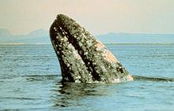

귀신고래(Eschrichtius robustus)는 고래목 귀신고랫과에 속해있는 유일한 고래이다.
한국어로는 쇠고래 라고도 한다. 몸길이 15미터, 몸무게 36톤까지 자라며 평균 수명은 50~60년이다.
현재는 북태평양에만 분포하고 있다.
귀신고래는 겉보기에 수염고래와 참고래의 중간 같은 모습이다. 위에서 봤을 때 머리는 가늘며 삼각꼴이다.
입 모양은 약간 아치 모양이며 양쪽에 130개에서 180개의 누런빛의 고래수염판이 있다.
다른 수염고래들과 다르게 귀신고래는 등지느러미가 없다. 몸의 뒷부분에 6새에서 12개의 쐐기 같은 것이 꼬리까지 이어져 나 있다.
종종 머리를 드러내 수면 위를 엿본다. 머리 윗부분에 있는 2개의 숨구멍으로 공기를 들어 마신다.
쉴 때는 분당 2~3번 호흡하고, 깊게 잠수할 때는 3~5분동안 숨을 마신다.
귀신고래들은 주식으로 해저면에 서식하는 무척추동물들을 먹기 때문에 다른 수염고래들과 다르게, 바닥에서 먹이를 먹는 데 특화되어 있다.
고래 중에서 헤엄 속도가 느린 편이다. 개체 간의 유대감도 깊지 않은 편이어서 혼자 다니는 경우가 많다.
다른 고래들처럼 귀신고래도 노래를 하는데, 꿀꿀소리에 가깝다.
